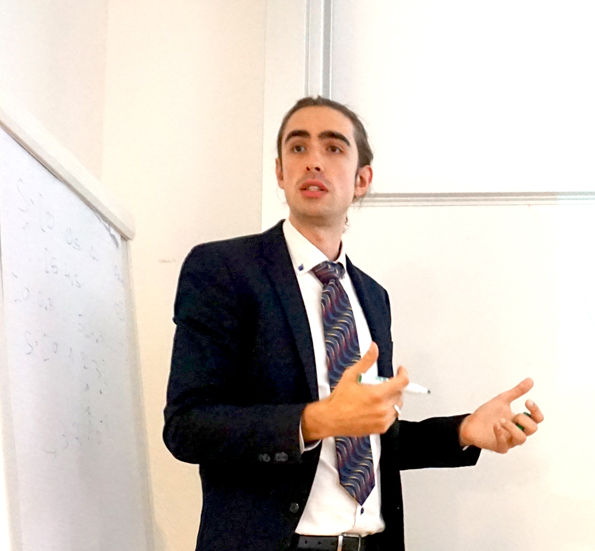
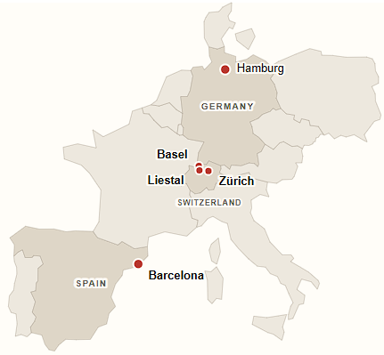

Single-cell mass and PicoBalance
High-speed mass measurements of living cells, including water-homeostasis dynamics, growth, infection signatures, eigenfrequency, and quality factor.
I like to solve puzzles, especially the ones where nature refuses to stay inside one discipline. I work at the intersection of physics and biology: measuring living systems, building methods, and using theory to understand what cells sense and do. What draws me in is the tension between mathematical beauty and real-world use. That is why I often work across boundaries: between physics and biology, theory and experiment, academia and industry, research and communication. I also care strongly about open science, because good ideas should travel further than the walls of a single lab.


Hamburg — Uni Hamburg, Physics: ultracold matter & quantum teleportation
Basel/Zürich — ETH PhD in biophysics: how living cells weigh, vibrate, and deform
Liestal — Nanosurf AG: Bringing my research into industry.
Barcelona — Insitute for Bioengineering Catalonia: Mechanobiology—how cells sense, react to and shape their physical world.
To learn more about one of my papers, patents, talks etc., click on them. Change to expert mode if you want to read all the details.
High-speed mass measurements of living cells, including water-homeostasis dynamics, growth, infection signatures, eigenfrequency, and quality factor.
Mechanical characterization of cells and biomaterials, cantilever calibration, nanomechanical mapping, and quantitative instrumentation.
Current work on how cells respond to elastic and viscous substrate cues, using hydrogels, modeling, microscopy, and data-driven dynamics.
I am looking for a skilled PhD student. If you are interested in my work, please contact me.
For collaborations, talks, or scientific exchange, you can reach me directly by email.
Email me